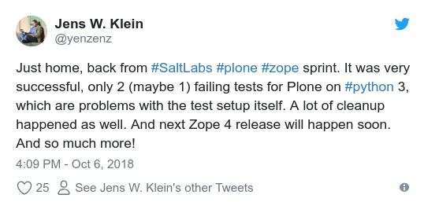
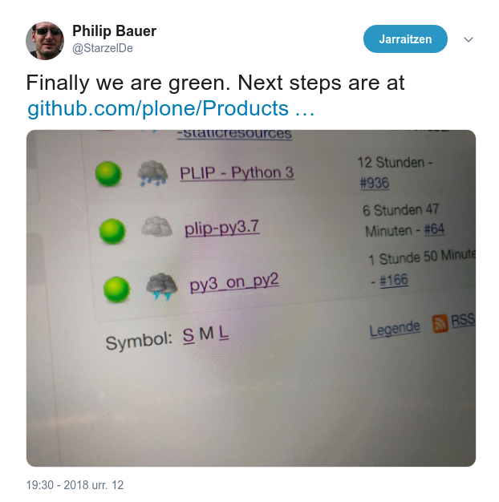

REST API and Python 3
The path to the future of Plone
by Mikel Larreategi @erralin
Plone Conference 2014: Bristol
Why Plone was going to die
- Stagnation
- No plans for Python 3
- Zope was dead
- Several leading core-developers left
- Several features unfinished and unpolished
Modern JS development with Angular JS and Plone
- We are not modernized enough regarding JS in Plone
- We keep discussing and changing front-end frameworks
- There is a promising world out there with frameworks like AngularJS
Plone Conference 2015: Bucharest
- Open Space: plone.restapi: a REST API for Plone
plone.restapi 1.0a1 (July 2016)
- Basic content-type information
- Basic content-negotiation
- Basic content creation
plone.restapi internals
- Content-negotiation:
Accept: application/json
GET /plone HTTP/1.1
Standard browser response:
HTTP/1.1 200 OK
Content-Type: text/html
<html>
...
<body>
...
GET /plone HTTP/1.1
Accept: application/json
API response:
HTTP/1.1 200 OK
Content-Type: application/json
{
"@components": {
"actions": {
"@id": "http://localhost:55001/plone/@actions"
},
...
}
This is quite elegant, right?
If we have a URL https://mysite.com/my-page the same URL works both for the browser and for the API
Add minimal children information to each page
Example
{
"@components": {
"breadcrumbs": {
"@id": "https://plonedemo.kitconcept.com/en/@breadcrumbs"
},
"navigation": {
"@id": "https://plonedemo.kitconcept.com/en/@navigation"
},
"workflow": {
"@id": "https://plonedemo.kitconcept.com/en/@workflow"
}
},
"@id": "https://plonedemo.kitconcept.com/en",
"@type": "LRF",
"UID": "fc836cdd270c41edbcae38c05708204c",
"contributors": [],
"created": "2018-03-07T10:06:48+00:00",
"creators": [
"admin"
],
"description": "",
"effective": null,
"exclude_from_nav": true,
"expires": null,
"id": "en",
"is_folderish": true,
"items": [
{
"@id": "https://plonedemo.kitconcept.com/en/media",
"@type": "LIF",
"description": "",
"review_state": "published",
"title": "Media"
},
{
"@id": "https://plonedemo.kitconcept.com/en/frontpage",
"@type": "Document",
"description": "The ultimate Open Source Enterprise CMS",
"review_state": "published",
"title": "Welcome to Plone 5"
},
{
"@id": "https://plonedemo.kitconcept.com/en/demo",
"@type": "Folder",
"description": "Vestibulum dignissim erat id eros mollis vitae tempus leo ultricies. Cras dapibus suscipit consectetur.\nInteger tincidunt feugiat tristique. Sed et arcu risus. Nam venenatis, tortor ac tincidunt amet.",
"review_state": "published",
"title": "Demo"
}
],
"items_total": 3,
"language": "en",
"layout": "folder_listing",
"modified": "2018-03-07T10:06:48+00:00",
"parent": {
"@id": "https://plonedemo.kitconcept.com",
"@type": "Plone Site",
"description": "",
"title": ""
},
"review_state": "published",
"rights": "",
"subjects": [],
"title": "English",
"version": "current"
}
Extend the API to provide CMS features
- Provide navigation menus and breadcrumbs
- Content-type schemas based on JSON Schema to build forms
- Search
- Workflow support
- Translation of content
- i18n-zed screen messages
- ...
Volto: React based front-end for Plone
- https://github.com/plone/volto
- Gutenberg project
This approach is being used already in at least 2 sites:
Python 3
Python 2 End Of Life
Zope 4: Zope on Python 3
- Michael Howitz (Gocept Gbmh) has lead the effort
- An upcoming final release (we are in beta 6 since thursday)
- New management interface (using bootstrap)
- WSGI support
- ZODB conversion tools from python 2 to python 3
Plone 5.2: Plone on Python 3
- Philip Bauer (Starzel) proposed it and has lead it
- No new features: it should work in Python 3 like in Python 2
- Development sprints in Innsbruck, Halle, Munich, Plone Conferences, ...
Saltlabs sprint in Halle (last week)
This is the most important thing that has happened in our world since long time ago
It's something that assures that we will be able to jump to python 3
Yay!!!
Quoting Eric Steele @esteele
For those who say that Plone is old, and has no future
- Our grandfather's axe is still sharp as ever
- This is our chance to come back and share you what we have learnt
- We were just watching.
- We are still here.
- We have always been here.
- We are here right now.